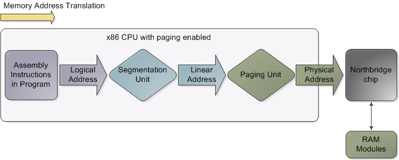

系统调用探真
前言
大家都说：系统调用比较耗时。所以，那什么是系统调用，什么是陷入内核。
好像没人好好解释过，于是，整理一段资料来集中说明系统调用的实现
定义
操作系统实现提供的所有系统调用所构成的集合即程序接口或应用编程接口(Application Programming Interface，API)。是应用程序同系统之间的接口。
而系统调用的实现，又是如何通知到系统的呢？是简单的调用一个函数吗？显然不是。
很重要的一个问题是，系统调用是一个内核提供的接口，所以，接口就有同一个的一个入口，同时也要保持隔离性。这就是所谓的中断和内核态。
中断
中断是计算机发展中一个重要的技术，它的出现很大程度上解放了CPU，提高了CPU的执行效率。
从物理学的角度看，中断是一种电信号，由硬件设备产生，并直接送入中断控制器的输入引脚上，然后再由中断控制器向处理器发送相应的信号。处理器一经检测到该信号，便中断自己当前正在处理的工作，转而去处理中断。此后， 处理器会通知 OS 已经产生中断。
其中中断有分为硬中断和软中断。
硬中断的特点
硬中断是由硬件产生的，比如，像磁盘，网卡，键盘，时钟等。每个设备或设备集都有它自己的IRQ（中断请求）。基于IRQ，CPU可以将相应的请求分发到对应的硬件驱动上（注：硬件驱动通常是内核中的一个子程序，而不是一个独立的进程）。
处理中断的驱动是需要运行在CPU上的，因此，当中断产生的时候，CPU会中断当前正在运行的任务，来处理中断。在有多核心的系统上，一个中断通常只能中断一颗CPU（也有一种特殊的情况，就是在大型主机上是有硬件通道的，它可以在没有主CPU的支持下，可以同时处理多个中断。）。
硬中断可以直接中断CPU。它会引起内核中相关的代码被触发。对于那些需要花费一些时间去处理的进程，中断代码本身也可以被其他的硬中断中断。
对于时钟中断，内核调度代码会将当前正在运行的进程挂起，从而让其他的进程来运行。它的存在是为了让调度代码（或称为调度器）可以调度多任务。
软中断的特点
软中断的处理非常像硬中断。然而，它们仅仅是由当前正在运行的进程所产生的。
通常，软中断是一些对I/O的请求。这些请求会调用内核中可以调度I/O发生的程序。对于某些设备，I/O请求需要被立即处理，而磁盘I/O请求通常可以排队并且可以稍后处理。根据I/O模型的不同，进程或许会被挂起直到I/O完成，此时内核调度器就会选择另一个进程去运行。I/O可以在进程之间产生并且调度过程通常和磁盘I/O的方式是相同。
软中断仅与内核相联系。而内核主要负责对需要运行的任何其他的进程进行调度。一些内核允许设备驱动的一些部分存在于用户空间，并且当需要的时候内核也会调度这个进程去运行。
软中断并不会直接中断CPU。也只有当前正在运行的代码（或进程）才会产生软中断。这种中断是一种需要内核为正在运行的进程去做一些事情（通常为I/O）的请求。有一个特殊的软中断是Yield调用，它的作用是请求内核调度器去查看是否有一些其他的进程可以运行。
软硬中断的本质
软中断的本质就是在内核某些位置检查是否有挂起的软中断（local_software_pending()不为0则表示有挂起的软中断），若有则调用do_softirq函数，在do_softirq函数中切换到软中断请求栈后，调用__do_softirq软中断回调函数。
硬中断的本质是接收到中断信号后，跳转到公共段代码执行do_IRQ，并切换到硬中断请求栈，执行中断回调函数。
而针对不同的中断类型调用不同的中断函数，linux则提供了一个中断向量表来实现这一功能。
系统调用和中断
Linux系统中的系统调用在不断的增加，而中断向量表的大小则被固定为255（1字节）个，所以，一一对应是不可能的，内核固定一个软中断（int 0x80）来接收系统调用，并利用参数来区分不同的系统调用。
中断发生以后，CPU跳到内核设置好的中断处理代码中去，由这部分内核代码来处理中断。这个处理过程中的上下文就是中断上下文。这个跳到内核的过程，就是陷入内核。
内核态
要说起内核态，那相对要说说用户态。为什么会有这一层隔离呢？那继续要讲讲内存的隔离。
内存隔离
内存如同系统中的数据库一样，而内核则就是一个独立子系统，系统要保持稳定，最重要的就是进行彻底隔离。
既然要隔离，如果数据被轻易查询并修改，那是不行的，所以首先要做的就是将数据查询功能进行改造，也就是寻址
分段和分页
分段和分页功能，关键就是解决寻址上的隔离，这是cpu支持的功能，也就是MMU（内存管理单元）模块。
要理解段页式，则还要讲到物理地址(physical address)、线性地址(linear address)或也叫虚拟地址(virtual address)的区别
- 物理地址(physical address)：用于内存芯片级的单元寻址，与处理器和CPU连接的地址总线相对应。
- 线性地址(linear address)：跟逻辑地址类似，它也是一个不真实的地址，如果逻辑地址是对应的硬件平台段式管理转换前地址的话，那么线性地址则对应了硬件页式内存的转换前地址。
- 逻辑地址(logical address)：是指由程序产生的与段相关的偏移地址部分。例如，你在进行C语言指针编程中，可以读取指针变量本身值(&操作)，实际上这个值就是逻辑地址，它是相对于你当前进程数据段的地址，不和绝对物理地址相干。

其实分页可以解决逻辑地址到物理地址的转换工作：只要逻辑地址前置支持索引并查询页表即可。但有个问题在于，一个程序中的地址在编译时已经固定，而页表中的索引在不断变化，在不同时间启动，对应的索引可能就会不一致。
于是，系统做了一次隔离，通过段描述符来将固定的虚拟地址映射到动态的段基地址中，后续再通过页表来找到对应的物理地址，页表的功能也避免的碎片化的产生，因为如果只存在段表的话，扩缩容是一个很头疼的问题。
GDT和LDT
段描述符的数组就叫做GDT(Global Descriptor Table，全局描述表)，Intel的设计者门提供了一个寄存器GDTR用来存放GDT的入口地址。程序员将GDT设定在内存中某个位置之后，可以通过LGDT指令将GDT的入口地址装入此寄存器，从此以后，CPU就根据此寄存器中的内容作为GDT的入口来访问GDT了。
除了GDT之外，还有LDT(Local Descriptor Table，本地描述表)，但与GDT不同的是，LDT在系统中可以存在多个，每个进程可以拥有自己的LDT。LDT的内存地址在LDTR寄存器中。
而，页表地址则是通过PCB的指针进行定义，因为每个进程是独享一份。
调用隔离
内存寻址通过段页式进行改造，那么，系统就可以在其中进行鉴权并隔离。这其中，就是口口相传的Ring0和Ring3权限。
首先，逻辑地址是由段选择符(16位) + 段内偏移量offset(32位)得来。
而段选择符则是GDT和LDT的索引ID，如下图：
表指示器用于区分GDT还是LDT，高13位则是索引，也就是说最大有214=16384个段信息。而其中最后2个字符RPL，大名叫做Rquest Privilege Level，请求权限等级。它还有2个兄弟，分别是CPL和DPL。
RPL\CPL\DPL是啥
CPL(Current Privilege Level)
CPL是当前执行的任务的特权等级，存储在CS和SS的第0位和第1位上。(两位表示0~3四个等级)
通常情况下，CPL等于代码所在段的特权等级，当程序转移到不同的代码段时，处理器将改变CPL。
注意:在遇到一致代码段时，情况特殊，一致代码段的特点是：可以被等级相同或者更低特权级的代码访问，当处理器访问一个与当前代码段CPL特权级不同的一致代码段时，CPL不会改变。
DPL(Descriptor Privilege Level)
表示门或者段的特权级，存储在门（中断描述符IDT）或者段的描述符（GDT）的DPL字段中。正如上面说的那样，当当前代码段试图访问一个段或者门时，其DPL将会和当前特权级CPL以及段或门的选择子比较，根据段或者门的类型不同，DPL的含义不同：
1. 数据段的DPL：规定了访问此段的最低权限。比如一个数据段的DPL是1，那么只有运行在CPL为0或1的程序才可能访问它。为什么说可能呢？因为还有一个比较的因素是RPL。访问数据段要满足有效特权级别（上述）高于数据段的DPL.
2. 非一致代码段的DPL(不使用调用门的情况)：DPL规定访问此段的特权，只有CPL与之相等才有可能访问。
3. 调用门的DPL，规定了程序或任务访问该门的最低权限。与数据段同。
4. 一致代码段和通过调用门访问的非一致代码段，DPL规定访问此段的最高权限。
比如一个段的DPL为2，那么CPL为0或者1的程序都无法访问。
5. TSS的DPL，同数据段。
RPL（Rquest Privilege Level）
RPL是通过段选择符的低两位来表现出来的(这么说来，CS和SS也是存放选择子的，同时CPL存放在CS和SS的低两位上，那么对CS和SS来说，选择子的RPL=当前段的CPL)。
处理器通过检查RPL和CPL来确认一个访问是否合法。即提出访问的段除了有足够的特权级CPL，如果RPL不够也是不行的(有些情况会忽略RPL检查)。
三兄弟解决了什么问题？内存鉴权
鉴权
上述的三兄弟，分别为使用方（CPL）、数据方（DPL）、中间寻址方（RPL），那系统就可以在寻址的时候做数据鉴权。那有个很严重的问题：权限谁能修改呢？
这个问题很严重，关系到鉴权是否成功。那我们就考虑一下，什么时候需要修改权限？
获取数据的时候？我们做的隔离就是为了避免用户进程直接修改内核数据。
那剩下的就是方法调用的时候！这就是CPU在一些特点情况下支持的方法调用，例如jmp和call方法。也就是四个门：任务门(task gate）、中断门(interrupt gate)、陷阱门(trap gate)以及调用门（call gate），而系统调用是通过中断门来实现。
中断流程
产生中断后，CPU一定不会将运行控制从高特权级转向低特权级，特权级必须要么保持不变（当操作系统内核自己被中断的时候），或被提升（当用户态程序被中断的时候）。无论哪一种情况，作为结果的CPL必须等于目的代码段的DPL。
如果CPL发生了改变（比如从用户态到内核态），一个栈切换操作（通过TSS完成）就会发生。如果中断是被用户态程序中的指令所触发的（比如软件执行INT n生产的中断），还会增加一个额外的检查：门的DPL必须具有与CPL相同或更低的特权。这就防止了用户代码随意触发中断。如果这些检查失败，就会产生一个一般保护异常（general-protection exception）。
系统调用耗时
所以，系统调用的耗时，主要和中断耗时一样：需要保存用户程序得上下文(context), 在进入内核得时候需要保存用户态得寄存器，在内核态返回用户态得时候会恢复这些寄存器得内容。这是一个开销的地方。系统调用的返回过程有很多额外工作，比如检查是否需要调度等。
当然还包括中断表的查询、参数校验等操作。
这样的设计核心原因还是由于需要系统的安全稳定。
听说，系统调用大约在50us左右